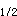

A.消化性溃疡
B.革-艾综合征
C.胃肠吻合口溃疡
D.反流性食管炎
E.胃癌
参考答案：E
题目解析：雷尼替丁主要治疗消化性溃疡，能缓解症状，促进溃疡愈合。革-艾综合征需用较大剂量，胃肠吻合口溃疡、反流性食管炎等也可应用。
A.支气管哮喘
B.皮肤黏膜过敏症状
C.血清病高热
D.过敏性休克
E.过敏性紫癜
参考答案：B
A.是H受体阻断药
B.有明显的中枢抑制作用
C.能抑制胃酸分泌
D.有抗过敏作用
E.有止吐作用
参考答案：C
A.可用于失眠的患者
B.可用于治疗荨麻疹
C.是H受体阻断药
D.可治疗胃和十二指肠溃疡
E.可治疗过敏性鼻炎
参考答案：D
A.可用于治疗皮肤黏膜过敏症
B.是H受体阻断药
C.可用于治疗胃和十二指肠溃疡
D.对反流性胃炎也有效
E.长期用药不引起性激素失调
参考答案：A
题目解析：为强效组胺H2受体拮抗剂。能有抑制组胺、五肽胃泌素和氨甲酰胆碱刺激后引起的胃酸分泌，降低胃酸和胃酶活性，主要用于胃酸过多、烧心的治疗
B.抑制胃酸分泌作用比西米替丁强
C.也能中和胃酸，减轻对溃疡面的刺激
D.肝功不良者t明显延长
E.对基础胃酸和夜间胃酸分泌都抑制
A.苯海拉明
B.异丙嗪
C.氯雷他定
D.氯苯那敏
E.以上都不是
A.血管神经性水肿
B.过敏性鼻炎
C.过敏性皮炎
D.过敏性哮喘
E.荨麻疹
题目解析：H受体阻断药对荨麻疹、过敏性鼻炎等疗效较好，可作为首选药物，对昆虫咬伤所致的皮肤瘙痒和水肿亦有疗效。对血清病、药疹和接触性皮炎也有一定疗效。对支气管哮喘疗效差，对过敏性休克无效。因此选D。
微信关注
 受体阻断药对荨麻疹、过敏性鼻炎等疗效较好，可作为首选药物，对昆虫咬伤所致的皮肤瘙痒和水肿亦有疗效。对血清病、药疹和接触性皮炎也有一定疗效。对支气管哮喘疗效差，对过敏性休克无效。因此选D。
受体阻断药对荨麻疹、过敏性鼻炎等疗效较好，可作为首选药物，对昆虫咬伤所致的皮肤瘙痒和水肿亦有疗效。对血清病、药疹和接触性皮炎也有一定疗效。对支气管哮喘疗效差，对过敏性休克无效。因此选D。